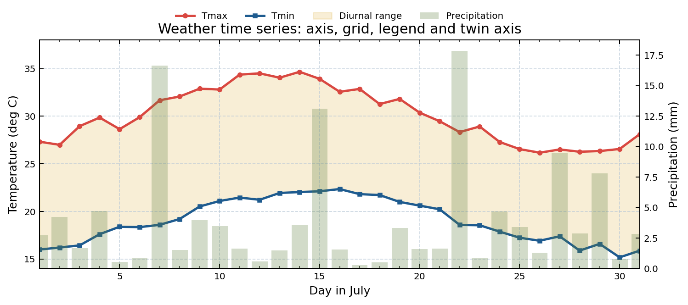
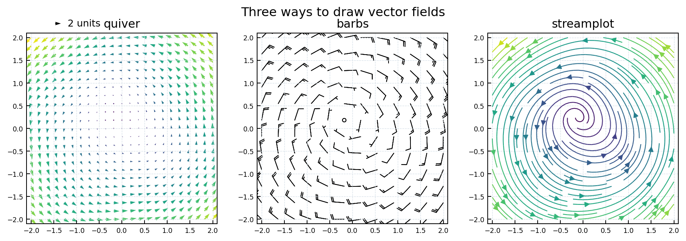

为什么气象绘图要学 Matplotlib？
- 它是 NumPy、Pandas、Xarray、Cartopy 等科学绘图库最常用的底层绘图接口。
- 它既能画普通统计图，也能画二维空间场、剖面图、风矢量、多面板综合图。
- 它的优势不只是“画图”，而是能够精确控制坐标轴、刻度、色标、图例、层级和输出格式。
Chapter 09
从 Figure、Axes 到时间序列、等值线、色标、风场和多子图版式。
Matplotlib 是 Python 科学绘图的基础库。本章面向气象数据分析，重点训练对象式绘图、图形类型选择、坐标轴与刻度控制、色标和等值线规范、风场可视化、多子图排版以及出版级图片保存。
Contents
课堂和科研脚本中建议以对象式 API 为主：先得到 fig 和 ax，再通过 ax.plot()、ax.contourf() 等方法控制具体子图。这样在多子图、双坐标轴、共享色标时更稳定。
如果图里只有一个坐标区，plt.plot() 可以快速演示；如果图里有多个坐标区、多个色标或地图投影，应切换到 fig, ax = plt.subplots() 的对象式写法。
conda install matplotlib
import numpy as np
import pandas as pd
import matplotlib.pyplot as plt
import matplotlib.ticker as mticker整张画布，决定输出尺寸、分辨率和全局布局。
真正绘图的坐标区。一个 Figure 可以包含多个 Axes。
横轴或纵轴对象，负责刻度位置、刻度标签和格式化。
图中几乎所有元素都是 Artist，包括线、点、文字、图例和色标。
折线与点标记，常用于时间序列或廓线。
散点、等值线填色、矢量场等批量图元常返回 Collection。
解释不同曲线、点组或类别。
解释颜色与数值之间的映射关系。
时间序列、类别比较、二维空间场、风矢量还是概率分布？变量类型决定图形类型。
突出趋势、极值、异常、空间中心、风向风速，还是变量之间的关系？结论决定标注和色标。
单位、坐标范围、刻度间隔、图例位置、色标范围和保存分辨率，都要服务于读图。

import numpy as np
import matplotlib.pyplot as plt
x = np.linspace(-np.pi, np.pi, 200)
y = np.sin(x)
z = np.cos(x)
fig, ax = plt.subplots(figsize=(6.4, 4.0), dpi=120)
ax.plot(x, y, color="tab:blue", lw=2, label="sin(x)")
ax.plot(x, z, color="tab:red", lw=2, ls="--", label="cos(x)")
ax.set_title("Trigonometric Functions")
ax.set_xlabel("x")
ax.set_ylabel("value")
ax.grid(ls="--", alpha=0.35)
ax.legend(frameon=False)
fig.tight_layout()
plt.show()figsize 使用英寸，dpi 是每英寸像素数。画布像素尺寸为 figsize * dpi。课堂展示图可以较宽，论文图应先按最终版面宽度设计。
figsize=(3.5, 2.6) 开始。figsize=(8, 4.5)。dpi=300 起步。fig = plt.figure(figsize=(6.4, 4.8), dpi=100)
fig, ax = plt.subplots(figsize=(8, 4), dpi=150)plt.subplots() 适合绝大多数图；GridSpec 适合复杂排版；fig.add_axes() 适合手动放置色标或小图。
fig, ax = plt.subplots()
ax.plot(x, y)
fig, axes = plt.subplots(2, 2, sharex=True)
axes[0, 0].plot(x, y)
fig = plt.figure()
ax = fig.add_axes([0.12, 0.12, 0.75, 0.75])| 问题类型 | 推荐图形 | 常用函数 | 气象例子 |
|---|---|---|---|
| 随时间变化 | 折线图、填充图 | plot、fill_between | 逐日温度、区域平均降水距平 |
| 两个变量关系 | 散点图 | scatter | 温度与湿度、站点观测与模式模拟 |
| 类别比较 | 柱状图 | bar、barh | 不同月份晴天数、不同站点暴雨日数 |
| 分布形态 | 直方图、箱型图 | hist、boxplot | 日降水分布、不同区域温度误差 |
| 二维连续场 | 等值线、填色图 | contour、contourf、pcolormesh | 高度场、温度场、降水空间分布 |
| 矢量场 | 风羽、箭头、流线 | barbs、quiver、streamplot | 水平风场、水汽通量、环流异常 |
展示连续变化，重点是趋势、峰值、阶段差异。
fig, ax = plt.subplots()
ax.plot(date, temp, lw=2, marker="o", label="T")
ax.fill_between(date, temp - 1, temp + 1, alpha=0.2)
ax.legend()展示两个变量关系，可用颜色或大小加入第三个变量。
fig, ax = plt.subplots()
sc = ax.scatter(temp, rh, c=wind_speed, s=25, cmap="viridis")
fig.colorbar(sc, ax=ax, label="Wind speed")展示类别差异，不适合表达连续时间场的细节。
fig, ax = plt.subplots()
ax.bar(months, rain_days, color="tab:blue", alpha=0.75)
ax.set_ylabel("Rainy days")展示分布形态。bins 的选择会影响读者对分布的判断。
fig, ax = plt.subplots()
ax.hist(error, bins=np.arange(-6, 6.5, 0.5), edgecolor="white")
ax.axvline(0, color="k", lw=1)气象图常见问题不是颜色不好看，而是坐标范围、刻度间隔或单位不清楚。应优先设置 xlim、ylim、主副刻度、刻度方向和网格线。
set_xlim() / set_ylim() 控制显示范围。tick_params() 控制刻度方向、长度、字号和四边显示。MultipleLocator、MaxNLocator、FixedLocator 控制刻度位置。grid(which="both") 可同时显示主副刻度网格。fig, ax = plt.subplots()
ax.plot(x, y, lw=2)
ax.set_xlim(0, 20)
ax.set_ylim(0, 1.1)
ax.xaxis.set_major_locator(mticker.MultipleLocator(5))
ax.xaxis.set_minor_locator(mticker.MultipleLocator(1))
ax.yaxis.set_major_locator(mticker.MultipleLocator(0.2))
ax.yaxis.set_minor_locator(mticker.MultipleLocator(0.1))
ax.tick_params(which="major", direction="in", length=5, top=True, right=True)
ax.tick_params(which="minor", direction="in", length=3, top=True, right=True)
ax.grid(which="major", ls="--", lw=0.6, alpha=0.6)坐标轴标签必须包含变量名和单位。时间序列不要把日期硬改成字符串编号，应优先保留 Pandas 时间类型，再使用日期格式化。
import matplotlib.dates as mdates
fig, ax = plt.subplots(figsize=(9, 3))
ax.plot(df["date"], df["temp_max"], label="Tmax")
ax.set_ylabel("Temperature (deg C)")
ax.xaxis.set_major_locator(mdates.DayLocator(interval=5))
ax.xaxis.set_major_formatter(mdates.DateFormatter("%m-%d"))
ax.tick_params(axis="x", rotation=45)
ax.legend(frameon=False)
fig.tight_layout()是否突出关键区间，是否误导性截断？
温度、降水、风速、位势高度等单位是否写在标签或色标上？
刻度是否太密、太少或不等距？主副刻度是否有必要？
网格是否帮助读数，而不是压过主体图层？
折线图的样式参数不仅是美化工具，也用于区分变量、实验组和显著性。黑白打印或投影环境下，线型和标记比颜色更可靠。
| 参数 | 作用 | 例子 |
|---|---|---|
color / c | 线条或点颜色 | "tab:blue"、"#d94841" |
linestyle / ls | 线型 | "-"、"--"、":" |
linewidth / lw | 线宽 | 0.8、2 |
marker | 点标记 | "o"、"s"、"^" |
alpha | 透明度 | 0.2、0.75 |
zorder | 图层顺序 | 重要线条放在更高层 |
ax.plot(x, y1, color="k", lw=1.8, marker="o",
markerfacecolor="white", markeredgewidth=1.2,
label="Observation")
ax.plot(x, y2, color="tab:red", ls="--", lw=1.5,
label="Simulation")
# fmt 写法：[marker][line][color]
ax.plot(x, y3, "s:b", label="Experiment")图例用于解释类别，注释用于突出结论。不要把图例放在遮挡峰值、中心或显著区域的位置。
legend(loc=...) 控制图例位置。frameon=False 可减少视觉干扰。annotate() 可以用箭头标出极值或事件。ax.legend(loc="upper left", ncol=2, frameon=False)
imax = np.argmax(temp)
ax.annotate("Heat peak",
xy=(date[imax], temp[imax]),
xytext=(date[imax], temp[imax] + 3),
arrowprops={"arrowstyle": "->", "color": "0.2"})如果图中必须出现中文，需确认运行环境有可用中文字体；同时设置 axes.unicode_minus=False，避免负号显示为方块。
plt.rcParams["font.sans-serif"] = ["SimHei", "Microsoft YaHei"]
plt.rcParams["axes.unicode_minus"] = False气象二维场图的关键是 X、Y 与 Z 的维度匹配，以及 levels、cmap、norm、extend 的一致性。多幅图比较时，不能让每幅图自动生成不同色标范围。

levels，并让色标、等值线标签和变量单位保持一致。contour 与 contourfcontour 画等值线，适合高度场、气压场、温度线。contourf 画填色，适合异常场、降水、湿度或背景变量。colors、linewidths、linestyles。ax.clabel() 添加，fmt 控制显示格式。x = np.linspace(70, 140, 141)
y = np.linspace(15, 55, 81)
X, Y = np.meshgrid(x, y)
Z = 5800 + 80 * np.sin(X / 10) * np.cos(Y / 8)
fig, ax = plt.subplots()
levels = np.arange(5520, 5921, 40)
cs = ax.contour(X, Y, Z, levels=levels,
colors="k", linewidths=0.8)
ax.clabel(cs, inline=True, fmt="%.0f", fontsize=8)色标不是装饰，而是数值解释系统。最基础是传入绘图返回对象；比较图时要统一 levels 或 norm；复杂版式可用 cax 或 axes_grid1 精确放置色标。
from matplotlib.colors import TwoSlopeNorm
levels = np.arange(-6, 6.5, 0.5)
norm = TwoSlopeNorm(vmin=-6, vcenter=0, vmax=6)
fig, axes = plt.subplots(1, 2, figsize=(8, 3))
for ax, data, title in zip(axes, [anom1, anom2], ["A", "B"]):
cf = ax.contourf(lon, lat, data, levels=levels,
cmap="RdBu_r", norm=norm, extend="both")
ax.set_title(title)
fig.colorbar(cf, ax=axes, orientation="horizontal",
pad=0.08, label="Temperature anomaly (deg C)")降水等级、风速等级、污染等级等变量更适合离散色阶。用 BoundaryNorm 可把数值边界和颜色边界绑定，避免颜色解释含糊。
from matplotlib.colors import BoundaryNorm
bounds = [0, 0.1, 10, 25, 50, 100, 250]
cmap = plt.get_cmap("Blues", len(bounds) - 1)
norm = BoundaryNorm(bounds, cmap.N)
cf = ax.contourf(lon, lat, rain, levels=bounds,
cmap=cmap, norm=norm, extend="max")
fig.colorbar(cf, ax=ax, ticks=bounds, label="Rainfall (mm)")风场的基本输入都是位置 x, y 和分量 u, v。差别在于表达重点：barbs 更接近天气图符号，quiver 适合方向和大小对比，streamplot 更容易显示辐合、辐散和旋转结构。

[::step, ::step] 对网格抽稀。quiverkey 相当于箭头图的图例。barb_increments 调整。step = 4
Q = ax.quiver(lon[::step], lat[::step],
u[::step, ::step], v[::step, ::step],
width=0.003, color="0.15")
ax.quiverkey(Q, 0.86, 1.04, 10, "10 m/s",
labelpos="E", coordinates="axes")
ax.barbs(lon[::step], lat[::step],
u[::step, ::step], v[::step, ::step],
length=5, linewidth=0.5,
barb_increments={"half": 2, "full": 4, "flag": 20})
ax.streamplot(lon, lat, u, v, density=1.4,
color=np.hypot(u, v), cmap="viridis")X、Y、Z 是否能一一对应？经纬度是否需要 meshgrid？
是否显式设置 levels，多图比较是否共享范围？
异常场是否以 0 为中心？是否需要 TwoSlopeNorm？
等值线标签、色标单位、图题是否能说明变量和层次？
风矢量是否过密？箭头图例是否说明参考风速？
填色、等值线、风场、散点、文字的 zorder 是否合理？
多子图的目的通常是比较：不同变量、不同时间、不同区域、不同实验。比较图应尽量共享坐标范围、色标范围和版式尺度。

GridSpec 或 subplot_mosaic 组织，再用共享色标保持比较一致。| 方法 | 适合场景 | 示例 |
|---|---|---|
plt.subplot | 快速演示，不推荐复杂科研图长期使用。 | plt.subplot(2, 2, 2) |
plt.subplots | 规则网格，多数课程图和练习图。 | fig, axes = plt.subplots(2, 2) |
GridSpec | 子图宽高不等、需要独立色标轴。 | gs = fig.add_gridspec(2, 3) |
subplot_mosaic | 用文字布局描述复杂面板。 | subplot_mosaic([["A", "B"], ["C", "C"]]) |
axes_grid1 | 给现有 Axes 添加等高、等宽色标或附加轴。 | make_axes_locatable(ax) |
当多幅图共享一个色标时，可把 ax=axes 传给 fig.colorbar()。如果要精确控制位置，则新建 cax。
fig = plt.figure(figsize=(8, 4), constrained_layout=True)
gs = fig.add_gridspec(2, 3, width_ratios=[1, 1, 0.05])
ax1 = fig.add_subplot(gs[0, 0])
ax2 = fig.add_subplot(gs[0, 1])
ax3 = fig.add_subplot(gs[1, 0])
ax4 = fig.add_subplot(gs[1, 1])
cax = fig.add_subplot(gs[:, 2])
cf = ax4.contourf(X, Y, data4, levels=levels, cmap="RdBu_r")
fig.colorbar(cf, cax=cax, label="Anomaly")twinx() 适合把单位不同但时间一致的两个变量放在一张图里，例如温度折线和降水柱状图。若两个变量没有共同解释目的，拆成上下两图通常更清楚。
fig, ax1 = plt.subplots(figsize=(9, 3.5))
ax1.plot(date, temp, color="tab:red", label="Temperature")
ax1.set_ylabel("Temperature (deg C)", color="tab:red")
ax2 = ax1.twinx()
ax2.bar(date, rain, color="tab:blue", alpha=0.25, label="Rainfall")
ax2.set_ylabel("Rainfall (mm)", color="tab:blue")
fig.tight_layout()png、jpg、pdf、svg。dpi >= 300。bbox_inches="tight" 可减少图片周边空白。pdf 或 svg；栅格场图常用 png。fig.savefig("figure.png", dpi=300, bbox_inches="tight")
fig.savefig("figure.pdf", bbox_inches="tight")
# 避免 notebook 中残留图层
plt.close(fig)图题或图注是否说明变量、时间、区域、层次？
坐标轴、色标、图例是否写明单位？
多子图是否共享可比范围？色标是否一致？
字体、线宽、标记、色标刻度在投影或打印时是否清楚？
图例、注释、色标是否遮挡关键区域？
脚本是否包含数据读取、筛选、绘图、保存的完整流程？
使用 Weather.csv 数据，绘制 New York 2015 年 7 月逐日最高温、最低温和降水量图。
newyork_201507_weather.png，分辨率不低于 300 dpi。import pandas as pd
import matplotlib.pyplot as plt
import matplotlib.dates as mdates
weather = pd.read_csv("Weather.csv", parse_dates=["date"])
ny = weather[(weather["city"] == "New York") &
(weather["date"].dt.strftime("%Y-%m") == "2015-07")]
fig, ax1 = plt.subplots(figsize=(10, 4), dpi=150)
ax1.plot(ny["date"], ny["temp_max"], color="tab:red", label="temp_max")
ax1.plot(ny["date"], ny["temp_min"], color="tab:blue", label="temp_min")
ax1.fill_between(ny["date"], ny["temp_min"], ny["temp_max"],
color="tab:orange", alpha=0.18, label="daily range")
ax1.set_ylabel("Temperature")
ax1.grid(ls="--", alpha=0.35)
ax1.legend(loc="upper left", frameon=False)
ax2 = ax1.twinx()
ax2.bar(ny["date"], ny["precipitation"], alpha=0.25,
color="tab:blue", label="precipitation")
ax2.set_ylabel("Precipitation")
ax1.xaxis.set_major_locator(mdates.DayLocator(interval=5))
ax1.xaxis.set_major_formatter(mdates.DateFormatter("%m-%d"))
fig.autofmt_xdate()
fig.suptitle("New York Weather, July 2015")
fig.tight_layout()
fig.savefig("newyork_201507_weather.png", dpi=300, bbox_inches="tight")构造或读取两组二维温度异常数据，使用相同 levels 和同一个色标绘制左右对比图。
np.meshgrid() 构造经纬度二维网格。TwoSlopeNorm 让 0 值位于色标中心。contour 黑色等值线，并添加 clabel。读取或构造 u、v 风分量，分别用 quiver 和 streamplot 表达风场结构。
speed = np.hypot(u, v)。quiverkey。density 控制线条密度，用 color=speed 表示风速。